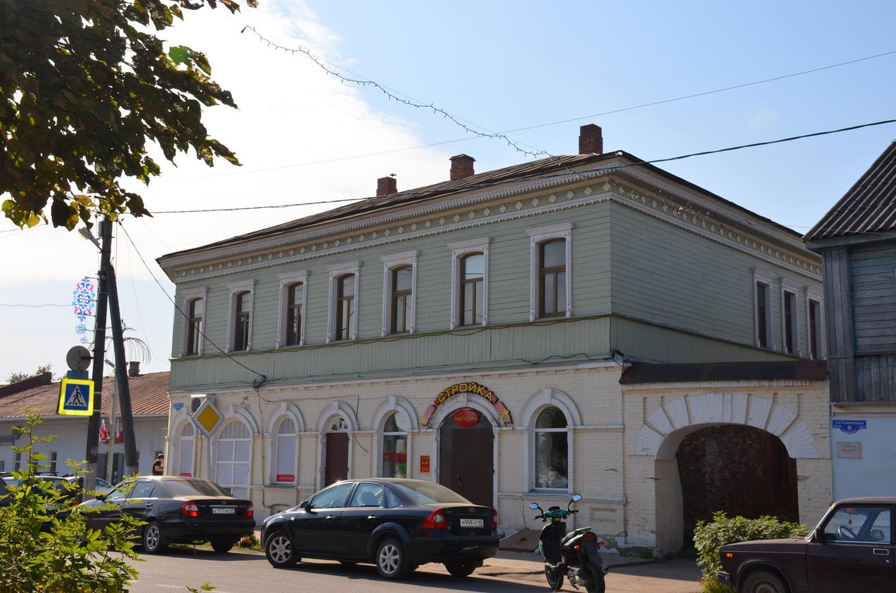
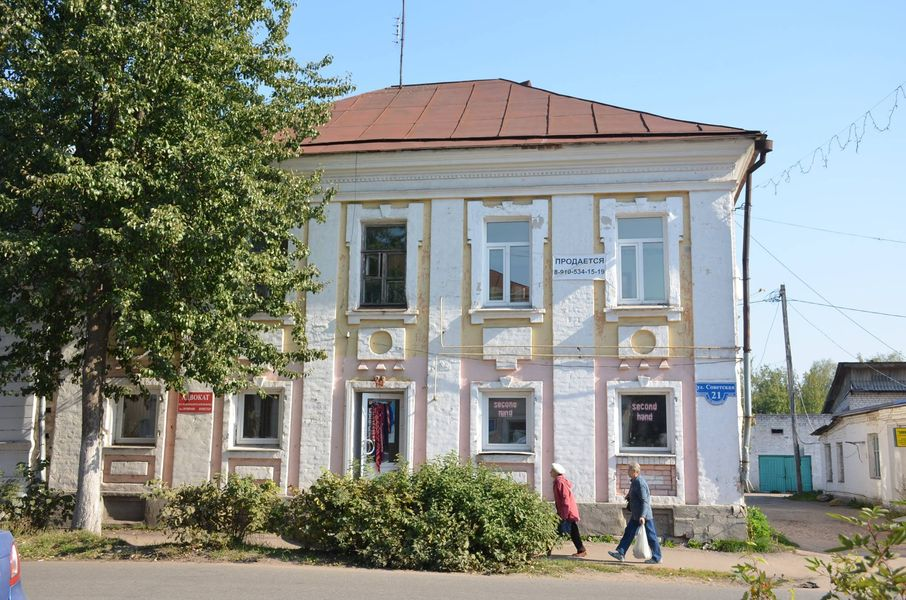
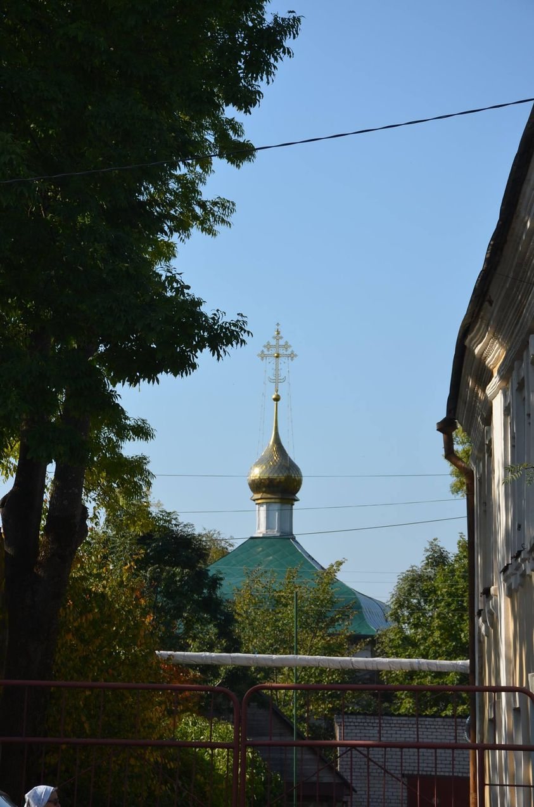
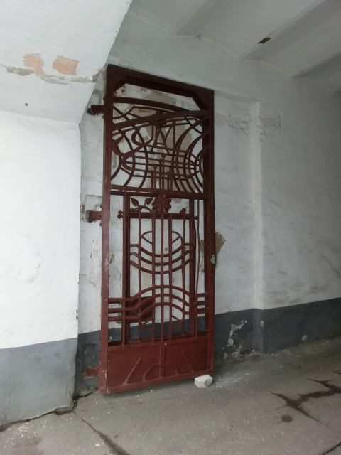
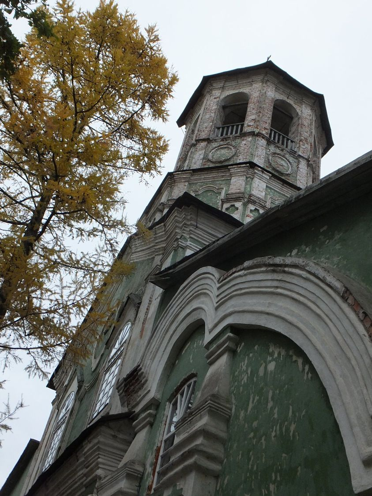
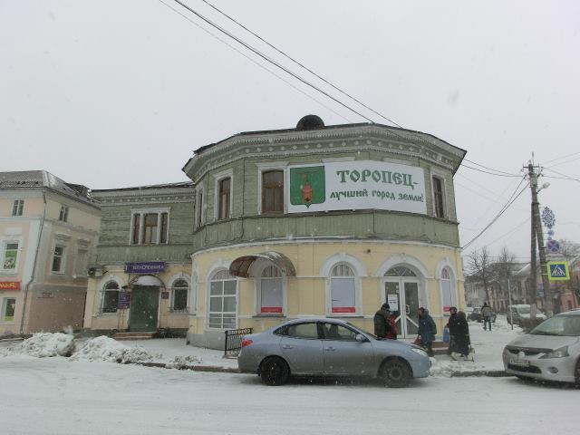
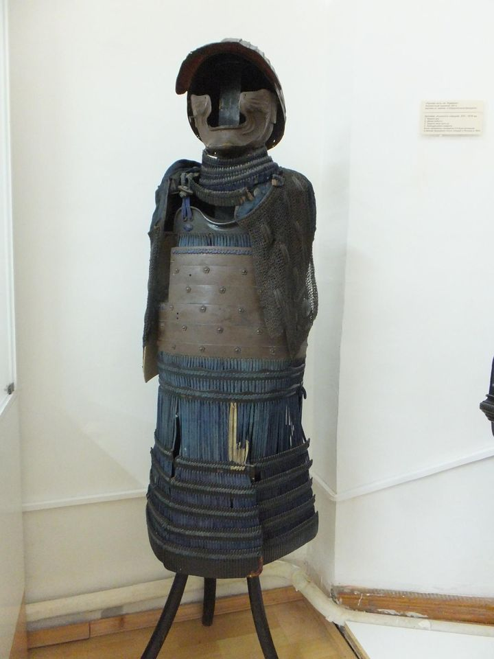

Страницы авторов "Тёмного леса"
Литературный Кисловодск и окрестности
Пишите нам! temnyjles@narod.ru
удивительный мой, маленький мой Торопец! Драгоценный мой городок. Всего-то - старая часть твоя небольшая, зато каждый дом - праздник, каждый дом - чудо. Купеческий, крепкий городок. Даже каменные наличники сработаны почти одной рукой - схожи между собой, что объединяет дома в разных концах города - в ансамбль. А до чего хороши кирпичные, начала века! Складские, торговые! Такое удовольствие - ходить себе неспешно, смотреть на печные трубы, на полу-колонны, на мансардные окна. в палисадниках сейчас все цветет, едут неспешно тетушки с рынка - на велосипедах, детишки идут в садик - летний лагерь. Все время слышу - конкурс-конкурс, что-то происходит интересное!
Да, нет денег поддержать все это, и город постепенно умирает Но достойно! Слава Богу, нет градоначальника, который бы снес все безжалостно и натыкал вставных "зубов", так - ветшает центр, но растут дома на окраине города, и дома не бедные, кирпичные, за железными уже - заборами.
Президент наш советует туризмом жить. а что остается, если от всей торопецкой промышленности шиш остался? Только вот - краеведческий музей, поместившийся в удивительной красоты церкви - с прохудившейся крышей.
Но живем пока. 22 августа будет День города. Уже асфальт накатили по Советской (б. Миллионной).







Главная страница сайта
Из нашей почты
Последнее изменение страницы 5 Apr 2023